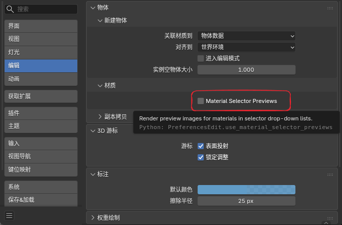
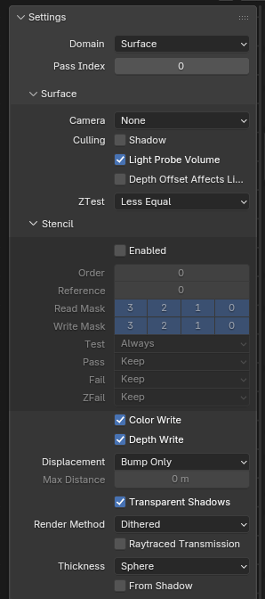
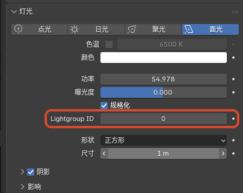
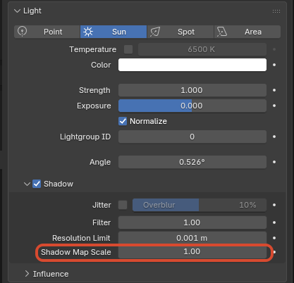

界面与工作流补充¶
1. Eevee Performance¶
作用¶
在 Outliner 中查看 Eevee 当前视口 / 最终渲染的性能统计、阶段拆分和功能提示，用来快速定位性能热点。

入口¶
Outliner > Display Mode > Eevee PerformanceOutliner头部中的Profiler/Pause/Sort by TimeOutliner头部中的设置弹出面板Eevee Performance
行为说明¶
- 开启
Profiler后，Eevee 会开始收集当前性能统计并在Outliner树中显示 Pause会暂停视口性能数据的继续刷新，方便查看当前结果Sort by Time会按当前 CPU 开销排序阶段列表，而不是固定的管线顺序Average Window用于设置平滑统计时使用的帧窗口大小- 当前树结构会显示
Viewport、Final Render、Metadata、Features、Stages、Shadow Contexts、Shadow Lights、Probe Costs、Hints等分组
阴影与探针归因¶
Shadow Contexts按渲染上下文拆分阴影 CPU 开销，例如MainView、PlanarProbe、CaptureProbe、Bake、OtherShadow Contexts会显示cpu、calls、loops、ms/call、ms/loop和share，用于判断阴影开销来自主视图、探针更新还是烘焙 / 其他路径Shadow Lights按灯光列出阴影 tilemap 负载，包含type、tilemaps、estimated_views、sync_dirty_tilemaps、tilemap_view_share和levelProbe Costs按探针列出更新成本，包含updated、total、rendered_views、resolution、estimated_work、work_share和level- 这些分组是成本定位信息，不等同于逐 GPU draw call profiler；排序和占比用于找热点，具体数值会随视口状态、采样和探针更新频率变化
当前范围¶
- 当前主要是 Eevee 的 CPU 侧阶段统计与功能提示，不是完整 GPU profiler
- 只对
Eevee有意义，不支持Cycles
2. 材质选择器预览开关¶
作用¶
控制材质下拉列表 / 搜索列表中是否渲染材质预览图。
这个开关主要用于在材质很多时，减少展开材质选择器时生成预览图的卡顿。
入口¶
Edit > Preferences > Editing > Objects > Materials > Material Selector Previews

行为说明¶
- 开启时：材质选择器会按当前逻辑显示材质预览图
- 关闭时：材质选择器会退回普通材质图标，不再在下拉列表里触发材质预览渲染
- 默认值为开启
当前范围¶
- 关闭后会阻止材质选择器、材质下拉 / 搜索列表，以及材质自动预览面板触发新的材质预览图渲染
- 关闭时会清理正在运行的材质预览作业，避免旧作业继续占用 Eevee 预览渲染
- 不影响 3D Viewport 的
Material Preview/Rendered视图模式 - 不影响材质本身的正常渲染结果
3. 材质剔除模式¶
作用¶
为材质提供更明确的面剔除控制，除了原本常见的背面剔除外，现在还支持 正面剔除。

入口¶
Material Properties > Settings > Culling > Camera
可选模式¶
None：不剔除，正反面都渲染Back：背面剔除Front：正面剔除
说明¶
Front适合做壳体内部观察、双层模型的反向显露，或某些特殊的描边 / 反相表现Shadow和Light Probe Volume仍然保留独立的剔除控制
4. 材质 Surface 渲染状态¶
作用¶
在 Eevee Surface 材质上直接控制深度测试、颜色写入、深度写入和模板测试 / 写入状态，用于遮罩、门户、特殊描边层、隐藏写入层等需要精确控制渲染状态的效果。
入口¶
Material Properties > Settings > Surface

Material Properties > Settings > Surface 中的 ZTest、Stencil、Color Write 与 Depth Write
ZTest¶
ZTest 决定片元如何和已有深度比较：
LessGreaterLess EqualGreater EqualEqualNot EqualAlwaysNever
默认应保持 Less Equal。ZTest Never 会拒绝整个片元，包括 stencil 写入；如果材质是模板写入层，通常应保留 Less Equal，然后按需要关闭 Color Write 和 Depth Write。
Color Write / Depth Write¶
Color Write：控制该 Surface 材质是否写入 Eevee 颜色输出Depth Write：控制该 Surface 材质是否写入 Eevee 深度输出
这两个开关只控制写入结果，不等于关闭节点树求值。透明、描边、AOV、模板等路径仍应按当前材质和管线规则理解。
Stencil¶
Stencil 折叠面板包含：
EnabledOrderReferenceRead MaskWrite MaskTestPassFailZFail
Test 可选：Always、Never、Equal、Not Equal、Less、Less Equal、Greater、Greater Equal。
Pass / Fail / ZFail 可选：Keep、Zero、Replace、Increment Clamp、Decrement Clamp、Invert、Increment Wrap、Decrement Wrap。
说明¶
Order控制 Eevee stencil pass 内部提交顺序，数值小的材质先提交Reference、Read Mask、Write Mask当前使用 4-bit 用户 stencil 范围- 常见写入层做法是开启
Stencil，使用Pass = Replace，并关闭Color Write/Depth Write - 常见读取层做法是开启
Stencil，设置Test = Equal或Not Equal，再使用相同的Reference/ mask 组合 - 如果一个材质既要参与深度遮挡又要写 stencil，需要特别检查
ZTest和Depth Write的组合，避免片元在深度测试阶段被提前拒绝 - 可在 3D Viewport 的
Viewport Shading > Render Pass中选择Stencil Value，直接预览当前视图里的模板值

Stencil 写入与读取的遮罩示例

Viewport Shading 中使用 Stencil Value 预览模板值
5. Eevee 灯光 Lightgroup ID¶
作用¶
为 Eevee 灯光指定一个整数灯光组编号，供 Shader Info 节点和 GLSL Function 中的 GLSLLight.lightgroup_id 做分组过滤。
入口¶
Light Data > Light > Lightgroup ID

灯光数据面板中的 Lightgroup ID
行为说明¶
- 默认值为
0 Shader Info节点的Lightgroup也为0时，只会计算Lightgroup ID = 0的灯光- 如果某个
Shader Info节点设置为其他整数值，则只有相同编号的灯光会参与该节点计算 - 在
GLSL Function里，glsl_light_get(i).lightgroup_id会返回这个整数值，可直接用于自定义逐灯continue/exclude过滤 - 这个分组过滤当前不会自动改动 Eevee 普通材质主通道的默认灯光结果；只有
Shader Info或你自己写的GLSL Function显式使用时才会生效
6. 太阳光 Shadow Map Scale¶
作用¶
为 Eevee Sun 灯光提供单独的阴影贴图覆盖尺度控制，用来调整太阳光 clipmap shadow 的覆盖范围和有效细节分布。
入口¶
Light Data > Shadow > Shadow Map Scale
该选项只在 Sun 灯光上显示。

Sun 灯光的 Shadow Map Scale 设置
行为说明¶
- 默认值为
1 - 增大数值会扩大 Sun shadow map 的覆盖尺度；当前正式版会把 scale 正确应用到 tilemap，并在扩大覆盖时同步提升有效细节分配
- 减小数值会把阴影贴图集中到更小范围，通常能提高近处细节，但更容易暴露覆盖范围不足或边界问题
- 该设置只影响 Eevee Sun shadow map 的采样 / 覆盖行为，不改变灯光颜色、能量、方向或材质侧着色模型
- 视口可开启 Shadow LOD 可视化，辅助排查 clipmap 细节层级（调试用途，不改变最终材质着色）
7. 启动图版本标识¶
作用¶
在启动图右上角的版本文字后追加当前 NPR 构建标识与构建日期，方便快速区分自定义构建版本。
当前显示格式¶
版本号 + npr post + 构建日期- 例如：
5.2.0 npr post 2026-08-11
8. IME 输入¶
作用¶
改进文本编辑与界面输入中的 IME 支持（含 Blender 5.2 API 适配与文本编辑器光标度量），让中文等输入法候选与光标位置更稳定。
说明¶
- 主要影响文本编辑器与需要 IME 的 UI 输入路径
- 不改变材质节点或渲染结果
9. 骨骼在 Outliner 隐藏¶
作用¶
为每个 Pose Bone 增加单独的 Outliner 可见性标记，用来在不影响骨骼本身功能的前提下整理复杂绑定的层级显示。
它适合把机制骨、辅助骨或不需要频繁查看的控制层从 Outliner 中隐藏，只保留更重要的骨架结构。
入口¶
Bone Properties > Viewport Display > Hide in OutlinerOutliner > Filter > Hidden PoseBones
行为说明¶
- 每个
Pose Bone都有自己的Hide in Outliner开关 - 这个开关默认是开启的
Outliner里的Hidden PoseBones过滤项默认也是开启的，所以默认不会立刻改变现有骨架的显示结果- 当关闭
Outliner > Filter > Hidden PoseBones后，勾选了Hide in Outliner的姿态骨骼会从 Outliner 树中隐藏 - 如果某个被隐藏的父骨骼仍然有可见子骨骼，可见子骨骼会继续保留在树里，不会整支层级一起消失
当前范围¶
- 当前只作用于
Pose Bone - 不作用于
Edit Bone - 只改变
Outliner的层级显示，不影响骨骼的变换、动画、驱动器和渲染结果